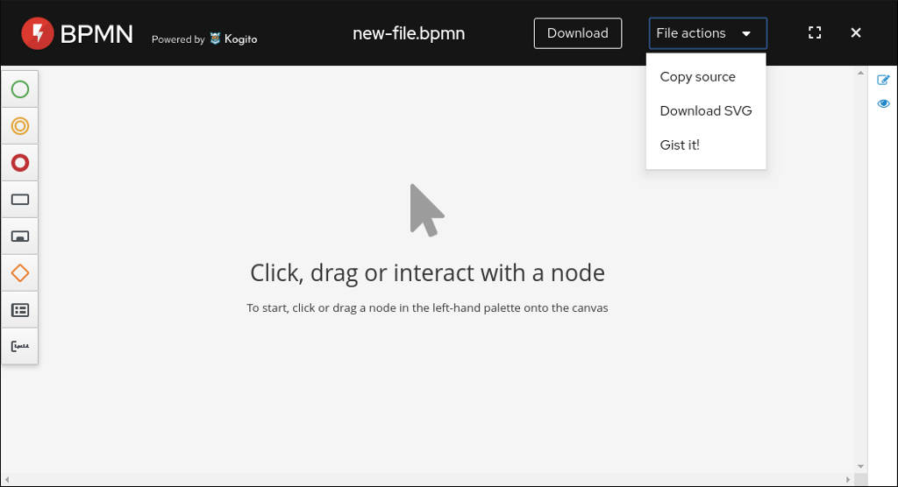
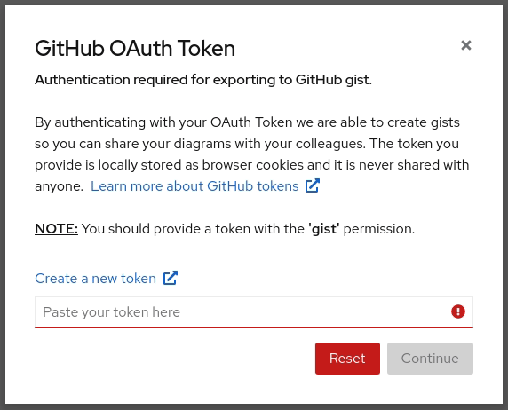
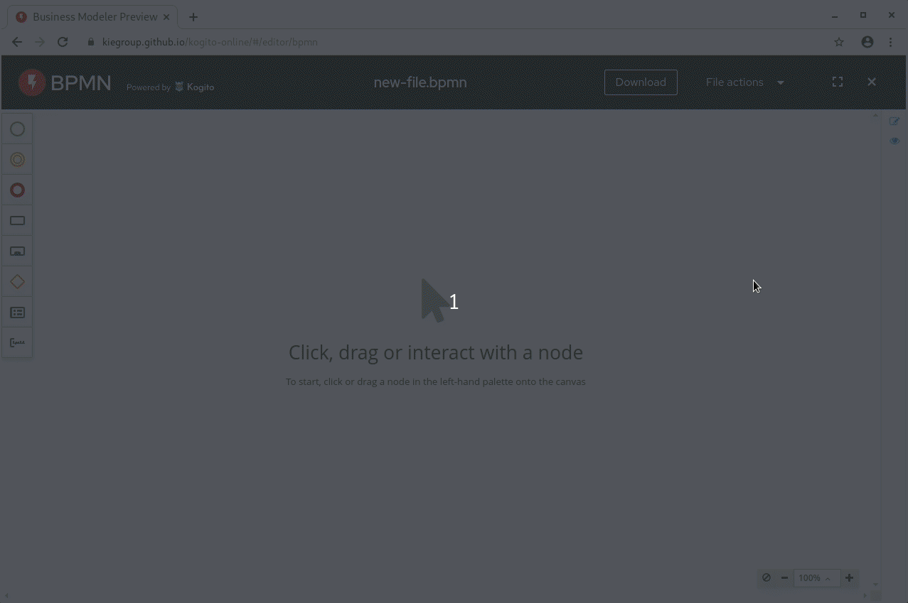
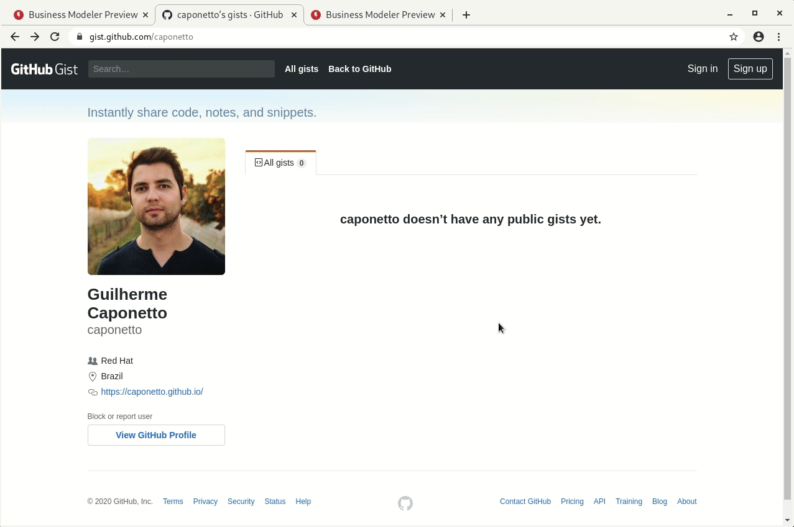

Exporting diagrams as GitHub gists
Users can now export their DMN and BPMN diagrams as GitHub gists on the Business Modeler. Let’s check how it works in this quick post.

Overview
The Business Modeler enables users to design business processes and rules at a fast pace. In order to improve the workflow in a more collaborative fashion, we’ve included the option to export the diagrams as GitHub gists. This way, users can easily share their diagrams with colleagues.
Once you open the online modeler, either for BPMN or DMN, a new option called Gist it! is available under the File actions menu.

On the first time you use this functionality, you will be asked to provide a GitHub personal access token with the gist permission so that we are authorized to create gists on your account. You can learn more about GitHub tokens at this official guide from GitHub.

Once the operation is succeeded, the online modeler will open the diagram directly from the gist you just created. You can also check your gists at https://gist.github.com/<username>.
Finally, you have two options to share your diagram with a colleague:
- Simply share the browser URL.
- Go to the GitHub gist page and share the gist URL. With that URL, your colleague can “Open from source” through the online modeler’s main page.
Note: The Gist it! operation will always create a new gist on your GitHub account, i.e., it won’t update an existing gist as it works like an export operation.
Demonstration
Suppose we want to design a business process on the online editor and, then, share this diagram with a colleague. For that, we would go to the Business process online modeler, design the business process, and gist it.
Once the gist is created, we can share the URL with our colleague so they can open the diagram on their browser. Let’s see this workflow on the following demonstrations.
Sharing the browser URL

Sharing the Gist URL

And that’s all for today. Thanks for reading! 😃
Stay healthy!
Exporting diagrams as GitHub gists was originally published in kie-tooling on Medium, where people are continuing the conversation by highlighting and responding to this story.